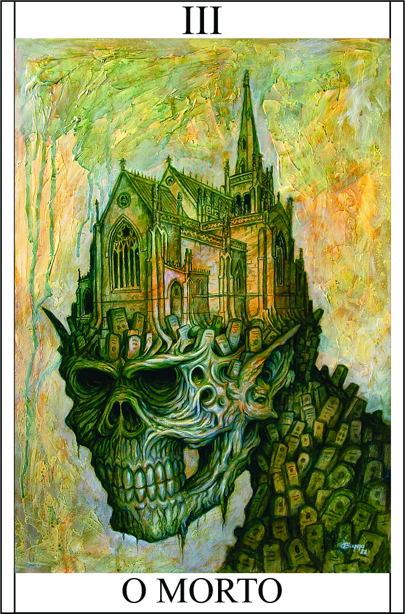

O Sangue
Têndencia: Neutro Mal
Passiva:
Cemitério:
Você possui a capacidade de selar os espíritos dos mortos dentro de você e invocá-los como zumbis para auxiliá-lo em combate. Essa habilidade especial permite que você reúna os zumbis, cada um deles representando uma pessoa falecida, com seus nomes e datas de morte marcados em seu braço direito. Quando você derrota um inimigo, pode selar o espírito dele dentro de você, adicionando-o ao seu cemitério pessoal. Em momentos de necessidade, você pode invocar esses zumbis para lutar ao seu lado, aproveitando o poder e as habilidades únicas de cada um deles. Somente 3 em campo.
Legado 1 - Maldição Sombria
Ao ativar a Maldição Sombria, o campeão libera uma aura de trevas e desespero ao seu redor. Isso afeta os oponentes próximos, enfraquecendo suas habilidades e resistências. Os oponentes afetados sofrem uma redução temporária em suas estatísticas, como dano, defesa ou velocidade, tornando-os mais vulneráveis aos ataques do campeão.
Aura do Desespero:
A aura sombria envolve o campeão, afetando os inimigos próximos. Os oponentes afetados têm suas estatísticas reduzidas em 1d4 pontos por 1 round durante um determinado período de tempo.
Vulnerabilidade Sombria:
A Maldição Sombria também torna os oponentes mais suscetíveis aos ataques do campeão. Durante a ativação da habilidade, o dano causado pelo campeão é aumentado em 1d6 contra os inimigos afetados pela aura do desespero.
Reduz estatísticas do alvo 1d4 | O Alvo recebe dano adicional de todas fontes +2
Condição para ativar a habilidade:
É necessário que o campeão tenha pelo menos um zumbi em seu cemitério pessoal.
Restrição de uso:
A habilidade Maldição Sombria pode ser ativada uma vez por batalha. Após a ativação, é necessário um período de recuperação antes que o campeão possa utilizá-la novamente.
Legado 2 - Transmutação da Vida
Você possui a capacidade de transformar um zumbi em um ser humano completamente restaurado, devolvendo-lhe a aparência de vida e a capacidade de falar.
Essa habilidade única permite que você utilize sua energia vital para reverter a transformação de um zumbi, trazendo-o de volta à forma humana. Ao realizar essa transmutação, o zumbi recuperará todas as características físicas de um ser humano saudável, incluindo a aparência e a capacidade de falar.
Essa habilidade pode ser uma ferramenta poderosa, permitindo que você restaure a humanidade de um zumbi e, potencialmente, estabeleça uma comunicação mais profunda com ele. Essa transformação pode abrir oportunidades para obter informações valiosas, estabelecer alianças ou até mesmo redimir os zumbis de seus atos passados.
No entanto, é importante lembrar que a habilidade de "Transmutação da Vida" requer um gasto significativo de energia vital e concentração. Além disso, a duração da transformação pode ser limitada, retornando o indivíduo à sua forma original após um determinado período de tempo.
Gasto: 5PV (até ele ser desfeito) | Somente 1 por vez | Vai ser leal a você
Condição para ativar a habilidade:
Não pode ter vinculo emocional com a "pessoa do cemitério".
Restrição de uso:
Somente 1.
Legado 3 - Invocação dos Perdidos:
Ao realizar a Invocação dos Perdidos, o campeão convoca zumbis adicionais para auxiliá-lo em combate. Esses zumbis surgem do cemitério pessoal do campeão e marcham ao seu lado, obedecendo fielmente às suas ordens.
Zumbis Aliados:
A habilidade permite que o campeão invoque até dois zumbis adicionais para lutar ao seu lado. Esses zumbis têm habilidades e características únicas, proporcionando um suporte adicional durante as batalhas.
Frenesi Mortal:
Os zumbis invocados pela habilidade possuem uma ferocidade intensificada, aumentando seu dano em 1d6 durante a duração da habilidade.
2 ZUMBI EXTRA | 1 SKILL ALEATORIA PARA ZUMBI | ((MANIPULAÇÃO) + 1D6 DANO
Restrição de uso:
A habilidade Invocação dos Perdidos pode ser ativada uma vez por confronto. Após a ativação, os zumbis permanecem em campo por um tempo limitado antes de retornarem ao cemitério pessoal do campeão.